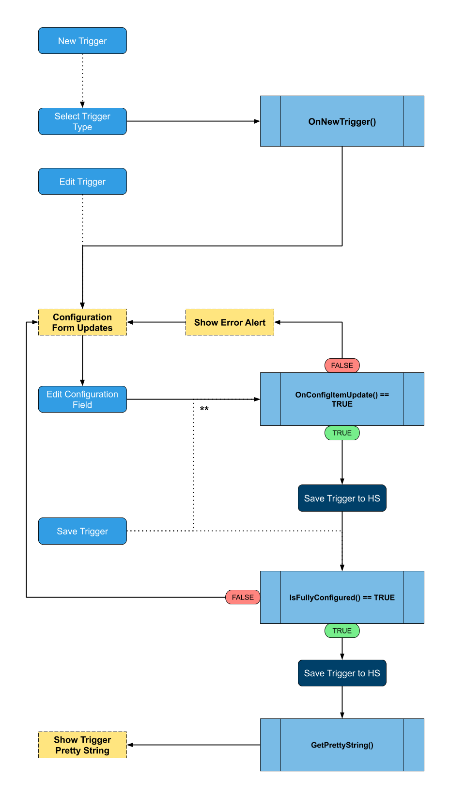

Class AbstractTriggerType
public abstract class AbstractTriggerTypeInheritance
Inherited Members
Namespace: HomeSeer.PluginSdk.Events
Assembly: PluginSdk.dll
The base implementation of a plugin trigger type available for users to select in HomeSeer
Inherit from this class to define your own trigger types and store them in your plugin's TriggerTypeCollection
Basic Usage
Define a class in your plugin that inherits from AbstractTriggerType and implements the required members
AbstractTriggerType.GetName()AbstractTriggerType.OnNewTrigger()AbstractTriggerType.IsFullyConfigured()AbstractTriggerType.OnConfigItemUpdate(AbstractView)AbstractTriggerType.GetPrettyString()AbstractTriggerType.IsTriggerTrue()AbstractTriggerType.ReferencesDeviceOrFeature()
public class MyCustomTriggerType : AbstractTriggerType {
//All of these constructors must be implemented as is
protected MyCustomTriggerType(int id, int subTypeNumber, int eventRef, byte[] dataIn, TriggerTypeCollection.ITriggerTypeListener listener) : base(id, subTypeNumber, eventRef, dataIn, listener) { }
protected MyCustomTriggerType() {}
//No code should be contained within these constructors
//Return the display name of this trigger type
protected override string GetName() => "My Custom Trigger Type";
protected override void OnNewTrigger() {
//Initialize the config page for a new trigger of this type
}
public override bool IsFullyConfigured() {
//Return whether the trigger is fully configured or not
}
protected override bool OnConfigItemUpdate(AbstractView configViewChange) {
//React to changes to the trigger configuration
}
public override string GetPrettyString() {
//Return a string describing the trigger to take
}
public override bool IsTriggerTrue() {
//Return whether the trigger condition has been met or not
}
public override bool ReferencesDeviceOrFeature(int devOrFeatRef) => false;
}
and add it to the TriggerTypeCollection implementation in your plugin class
protected override void Initialize() {
...
TriggerTypes.AddTriggerType(typeof(MyCustomTriggerType));
...
}
Lifecycle
It is important to not include any additional code in the constructors for custom trigger types because the lifecycle of triggers is managed by the HomeSeer platform. Methods like AbstractTriggerType.OnNewTrigger(), AbstractTriggerType.IsFullyConfigured(), and AbstractTriggerType.OnConfigItemUpdate(AbstractView) are called by HomeSeer throughout the life of the trigger. Include the corresponding logic for your custom trigger type in the relevant methods.
The typical lifecycle of an trigger can be seen in the following diagram.

** Edits made to InputViews are not automatically captured like other ViewTypes and will only call OnConfigItemUpdate() when the user clicks the Save button.
Constructors
View SourceAbstractTriggerType()
Initialize a new, unconfigured AbstractTriggerType
This is called through reflection by the TriggerTypeCollection class if a class that derives from this type is added to its list.
Declaration
protected AbstractTriggerType()AbstractTriggerType(TrigActInfo, TriggerTypeCollection.ITriggerTypeListener, Boolean)
Declaration
protected AbstractTriggerType(TrigActInfo trigInfo, TriggerTypeCollection.ITriggerTypeListener listener, bool logDebug = false)Parameters
| Type | Name | Description |
|---|---|---|
| TrigActInfo | trigInfo | |
| TriggerTypeCollection.ITriggerTypeListener | listener | |
| System.Boolean | logDebug |
AbstractTriggerType(Int32, Int32, Int32, Byte[], TriggerTypeCollection.ITriggerTypeListener)
Initialize a new AbstractTriggerType with the specified ID, Event Ref, and Data byte array. The byte array will be automatically parsed for a Page, and a new one will be created if the array is empty.
This is called through reflection by the TriggerTypeCollection class if a class that derives from this type is added to its list.
You MUST implement one of these constructor signatures in any class that derives from AbstractTriggerType
Declaration
protected AbstractTriggerType(int id, int eventRef, int selectedSubTriggerIndex, byte[] dataIn, TriggerTypeCollection.ITriggerTypeListener listener)Parameters
| Type | Name | Description |
|---|---|---|
| System.Int32 | id | The unique ID of this trigger in HomeSeer |
| System.Int32 | eventRef | The event reference ID that this trigger is associated with in HomeSeer |
| System.Int32 | selectedSubTriggerIndex | The 0 based index of the sub-trigger type selected for this trigger |
| System.Byte[] | dataIn | A byte array containing the definition for a Page |
| TriggerTypeCollection.ITriggerTypeListener | listener |
AbstractTriggerType(Int32, Int32, Int32, Byte[], TriggerTypeCollection.ITriggerTypeListener, Boolean)
Initialize a new AbstractTriggerType with the specified ID, Event Ref, and Data byte array. The byte array will be automatically parsed for a Page, and a new one will be created if the array is empty.
This is called through reflection by the TriggerTypeCollection class if a class that derives from this type is added to its list.
You MUST implement one of these constructor signatures in any class that derives from AbstractTriggerType
Declaration
protected AbstractTriggerType(int id, int eventRef, int selectedSubTriggerIndex, byte[] dataIn, TriggerTypeCollection.ITriggerTypeListener listener, bool logDebug = false)Parameters
| Type | Name | Description |
|---|---|---|
| System.Int32 | id | The unique ID of this trigger in HomeSeer |
| System.Int32 | eventRef | The event reference ID that this trigger is associated with in HomeSeer |
| System.Int32 | selectedSubTriggerIndex | The 0 based index of the sub-trigger type selected for this trigger |
| System.Byte[] | dataIn | A byte array containing the definition for a Page |
| TriggerTypeCollection.ITriggerTypeListener | listener | |
| System.Boolean | logDebug |
Fields
View Source_configPage
Declaration
Page _configPageField Value
| Type | Description |
|---|---|
| Page |
_data
Declaration
byte[] _dataField Value
| Type | Description |
|---|---|
| System.Byte[] |
_eventRef
Declaration
int _eventRefField Value
| Type | Description |
|---|---|
| System.Int32 |
_id
Declaration
int _idField Value
| Type | Description |
|---|---|
| System.Int32 |
_inData
Declaration
readonly byte[] _inDataField Value
| Type | Description |
|---|---|
| System.Byte[] |
_selectedSubTriggerIndex
Declaration
int _selectedSubTriggerIndexField Value
| Type | Description |
|---|---|
| System.Int32 |
Properties
View SourceCanBeCondition
A boolean value indicating whether this trigger type can be used as a condition or not. A condition is a trigger that operates in conjunction with another trigger in an AND/OR pattern.
Declaration
public virtual bool CanBeCondition { get; }Property Value
| Type | Description |
|---|---|
| System.Boolean |
ConfigPage
The Page displayed to users to allow them to configure this trigger.
The Name of this page is not used or displayed anywhere and is not important.
Declaration
protected Page ConfigPage { get; set; }Property Value
| Type | Description |
|---|---|
| Page |
Remarks
The ID of this page must be equal to the automatic PageId.
Data
The byte[] describing the current state of the ConfigPage for the trigger.
Declaration
public byte[] Data { get; }Property Value
| Type | Description |
|---|---|
| System.Byte[] |
EventRef
The reference ID of the event the trigger is associated with.
Declaration
public int EventRef { get; }Property Value
| Type | Description |
|---|---|
| System.Int32 |
Id
The unique ID for the trigger.
Declaration
public int Id { get; }Property Value
| Type | Description |
|---|---|
| System.Int32 |
LogDebug
Used to enable/disable internal logging to the console
When it is TRUE, log messages from the PluginSdk code will be written to the Console
Declaration
public bool LogDebug { get; set; }Property Value
| Type | Description |
|---|---|
| System.Boolean |
Name
The generic name of this trigger type that is displayed in the list of available triggers a user can select from on the events page.
Declaration
public string Name { get; }Property Value
| Type | Description |
|---|---|
| System.String |
PageId
Use this as a unique prefix for all of your JUI views and as the ID for the ConfigPage
Declaration
protected string PageId { get; }Property Value
| Type | Description |
|---|---|
| System.String |
SelectedSubTriggerIndex
The currently selected sub-trigger index
Declaration
protected int SelectedSubTriggerIndex { get; }Property Value
| Type | Description |
|---|---|
| System.Int32 |
SubTriggerCount
The number of sub-trigger types this trigger type supports.
Declaration
public int SubTriggerCount { get; }Property Value
| Type | Description |
|---|---|
| System.Int32 |
SubTriggerTypeNames
A System.Collections.Generic.List<T> of names for the available sub-trigger types users can select from for this trigger type. Leave this list empty if the trigger type does not support any subtypes.
Declaration
protected virtual List<string> SubTriggerTypeNames { get; set; }Property Value
| Type | Description |
|---|---|
| System.Collections.Generic.List<System.String> |
TriggerListener
An interface reference to the plugin that owns this trigger type.
Define your own interface that inherits from TriggerTypeCollection.ITriggerTypeListener and then cast this as the type you defined to get a reference to your plugin that can handle any methods you wish to define.
Declaration
public TriggerTypeCollection.ITriggerTypeListener TriggerListener { get; }Property Value
| Type | Description |
|---|---|
| TriggerTypeCollection.ITriggerTypeListener |
Methods
View SourceConvertLegacyData(Byte[])
Called when legacy trigger data needs to be converted to the new format
Override this if you need to support legacy triggers. Convert the UI to the new format and save it in the ConfigPage. Finally, return Data to automatically serialize the ConfigPage to byte[]. Use DeserializeLegacyData<TOutObject>(Byte[], Boolean) to deserialize the data using the legacy method.
Declaration
protected virtual byte[] ConvertLegacyData(byte[] inData)Parameters
| Type | Name | Description |
|---|---|---|
| System.Byte[] | inData | A byte array describing the current trigger configuration in legacy format. |
Returns
| Type | Description |
|---|---|
| System.Byte[] | A byte array describing the current trigger configuration in new format. |
Remarks
This is also called if there was an error while trying to deserialize the modern data format as a fallback
GetData()
Declaration
byte[] GetData()Returns
| Type | Description |
|---|---|
| System.Byte[] |
GetName()
Called by HomeSeer to obtain the name of this trigger type.
Declaration
protected abstract string GetName()Returns
| Type | Description |
|---|---|
| System.String | A generic name for this trigger to be displayed in the list of available triggers. |
GetPrettyString()
Called by HomeSeer when the trigger is configured and needs to be displayed to the user as an easy to read sentence that flows with an IF... THEN... format.
This is currently a WIP (Work in Progress) The end goal is to provide a StringBuilder-like class that makes it easy to output pre-formatted HTML so that all common items are quickly identifiable by users. (ex. All device/feature names are colored the same and bolded)
Declaration
public abstract string GetPrettyString()Returns
| Type | Description |
|---|---|
| System.String | An easy to read string describing the trigger as it would follow an IF... |
GetSubTriggerName(Int32)
Called by HomeSeer to obtain the name of the sub-trigger with the specified index
Declaration
public string GetSubTriggerName(int subTriggerNum)Parameters
| Type | Name | Description |
|---|---|---|
| System.Int32 | subTriggerNum | The index of the requested sub-trigger in the SubTriggerTypeNames property |
Returns
| Type | Description |
|---|---|
| System.String | The name of the sub-trigger for the specified index |
Exceptions
| Type | Condition |
|---|---|
| System.ArgumentOutOfRangeException | Thrown when the index requested does not exist in the list of available sub-triggers for this trigger type. |
InflateTriggerFromData()
Declaration
void InflateTriggerFromData()IsFullyConfigured()
Called to determine if this trigger is configured completely or if there is still more to configure.
Declaration
public abstract bool IsFullyConfigured()Returns
| Type | Description |
|---|---|
| System.Boolean | TRUE if the trigger is configured and can be formatted for display, FALSE if there are more options to configure before the trigger can be used. |
IsTriggerTrue(Boolean)
Called by HomeSeer to determine if this trigger's conditions have been met.
Declaration
public abstract bool IsTriggerTrue(bool isCondition)Parameters
| Type | Name | Description |
|---|---|---|
| System.Boolean | isCondition | TRUE if the trigger is paired with other triggers, FALSE if it is alone. |
Returns
| Type | Description |
|---|---|
| System.Boolean | TRUE if the trigger's conditions have been met, FALSE if they haven't |
Remarks
Always return TRUE if the trigger cannot be a condition and there is nothing to check when an event is manually executed by a user.
OnConfigItemUpdate(AbstractView)
Called when a view on the ConfigPage has been updated by a user and needs to be processed.
Declaration
protected abstract bool OnConfigItemUpdate(AbstractView configViewChange)Parameters
| Type | Name | Description |
|---|---|---|
| AbstractView | configViewChange | The new state of the view that was changed |
Returns
| Type | Description |
|---|---|
| System.Boolean | TRUE to update the view in the ConfigPage and save the change, or FALSE to discard the change. |
OnEditTrigger(Page)
Called when a trigger of this type is being edited and changes need to be propagated to the ConfigPage
We do not recommend overriding this method unless you specifically want to adjust the way view changes are processed as a whole.
Declaration
protected virtual void OnEditTrigger(Page viewChanges)Parameters
| Type | Name | Description |
|---|---|---|
| Page | viewChanges | A Page containing changes to the ConfigPage |
OnNewTrigger()
Called when a new trigger of this type is being created. Initialize the ConfigPage to the trigger's starting state so users can begin configuring it.
You must create a new Page with a unique ID provided by PageId and be of the type EventTrigger. Any JUI view added to the ConfigPage must use a unique ID as it will be displayed on an event page that could also be housing HTML from other plugins. It is recommended to use the PageId as a prefix for all views added to ensure that their IDs are unique.
If no page is set, a blank page will be auto initialized.
Declaration
protected abstract void OnNewTrigger()ProcessData(Byte[])
Declaration
byte[] ProcessData(byte[] inData)Parameters
| Type | Name | Description |
|---|---|---|
| System.Byte[] | inData |
Returns
| Type | Description |
|---|---|
| System.Byte[] |
ProcessPostData(Dictionary<String, String>)
Declaration
bool ProcessPostData(Dictionary<string, string> changes)Parameters
| Type | Name | Description |
|---|---|---|
| System.Collections.Generic.Dictionary<System.String, System.String> | changes |
Returns
| Type | Description |
|---|---|
| System.Boolean |
ReferencesDeviceOrFeature(Int32)
Called by HomeSeer to determine if this trigger references the device or feature with the specified ref.
Declaration
public abstract bool ReferencesDeviceOrFeature(int devOrFeatRef)Parameters
| Type | Name | Description |
|---|---|---|
| System.Int32 | devOrFeatRef | The unique Ref to check for |
Returns
| Type | Description |
|---|---|
| System.Boolean | TRUE if the trigger references the specified device/feature, FALSE if it does not. |
ToHtml()
Called by TriggerTypeCollection when TriggerBuildUI(TrigActInfo) is called to get the HTML to display to the user so they can configure the action.
This HTML is automatically generated by the ConfigPage defined in the trigger.
Declaration
public string ToHtml()Returns
| Type | Description |
|---|---|
| System.String | HTML to show on the HomeSeer events page for the user. |